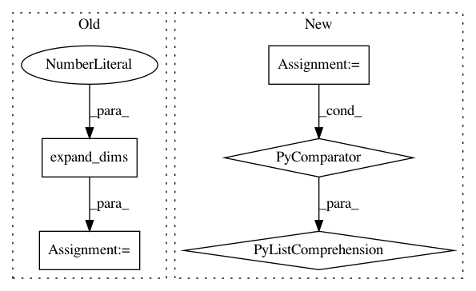

0b74cae49accfaf5adfa8cd55bc2ef165c33b206,rastervision/data/raster_source/rasterized_source.py,RasterizedSource,_activate,#RasterizedSource#,84
Before Change
self.raster = geojson_to_raster(geojson, self.rasterizer_options,
self.extent, self.crs_transformer)
// Add third singleton dim since rasters must have >=1 channel.
self.raster = np.expand_dims(self.raster, 2)
self.activated = True
def _deactivate(self):
self.raster = None
After Change
// mutable.
for shape, class_id in shapes:
shape.class_id = class_id
self.str_tree = STRtree([shape for shape, class_id in shapes])
self.activated = True
def _deactivate(self):
In pattern: SUPERPATTERN
Frequency: 3
Non-data size: 5
Instances
Project Name: azavea/raster-vision
Commit Name: 0b74cae49accfaf5adfa8cd55bc2ef165c33b206
Time: 2018-12-18
Author: lewfish@gmail.com
File Name: rastervision/data/raster_source/rasterized_source.py
Class Name: RasterizedSource
Method Name: _activate
Project Name: tensorflow/tpu
Commit Name: b6437e4dd115c5b290eb84b0620610b497293609
Time: 2020-05-12
Author: pengchong@google.com
File Name: models/official/detection/serving/inputs.py
Class Name:
Method Name: raw_image_tensor_input
Project Name: OpenNMT/OpenNMT-tf
Commit Name: 2784339dddeecd94dbab074140ba8e478b42f653
Time: 2019-08-29
Author: guillaume.klein@systrangroup.com
File Name: opennmt/decoders/self_attention_decoder.py
Class Name: SelfAttentionDecoder
Method Name: _run